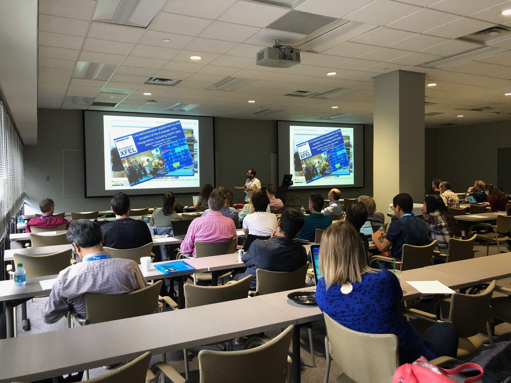
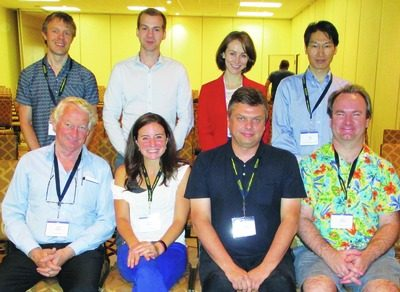
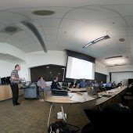

2023 Novel data methods for crystallography and beyond.
Software Fayre at IUCr 2023. August 23rd and 24th 2023. 11.15 - 6 pm (day 1) and 11.15 - 1 pm (day 2).
Slides from presentations kindly shared by our presenters are available on Google Drive or by request.
Some of the topics we covered include:
Expand-Maximise-Compress algorithm for diffraction pattern orientation refinement [1]
Iterative projection algorithms for real-space refinement in protein crystallography [2]
Diffraction pattern simulation using the reborn software [3]
In-memory data processing
Ptychographic-inspired analysis methods for crystals
[1] Lan, et al. “Solving protein structure from sparse serial microcrystal diffraction data at a storage-ring synchrotron source.” IUCrJ 5, 5, pp. 548-558 (2018)
[2] Lo, Kingston, and Millane. “Iterative projection algorithms in protein crystallography. II. Application.” Acta Cryst. A, 71, 4, pp. 451-459 (2015)
[3] https://kirianlab.gitlab.io/reborn/index.html
2023 Serial X-ray crystallography sample delivery workshop at La Trobe University
August 21st, 9 am - 6 pm.
Morning: talks from Aina Cohen, Junko Yano, James Nathan Hohman, Eleanor Campbell, Alessandra Henkel.
Afternoon: hands-on session with experts in serial microcrystal crystallography sample delivery, including CFEL tape drive 2, fixed targets, liquid and high viscosity injection systems, mixing injectors (TBC). More details & registration (free): https://sites.google.com/view/serialmxworkshop2023/home
2023 Advances in macromolecule microcrystallography: innovations in production, detection, handling and data collection of microcrystals
August 21st, 9 am - 6 pm. free.
Nadia spoke about data collection and analysis in XFEL serial femtosecond crystallography in the 4.30 pm session. Click on the title for more details.
2023 "From Time-Resolved Structure Factor Amplitudes to Structure and Dynamics" Workshop, May 15th, 2023
As part of the BioXFEL 10th Annual International Conference, chaired by Edward Snell, Juan Lopez Garriga and Alexandra Ros, there was a workshop on time-resolved crystallographic data analysis. Workshop organizers and speakers are: Drs. Marius Schmidt, Sabine Botha, and Sebastian Westenhoff.
2019 Mini-Workshop in XFEL sample delivery (14 Feb 2019)
As part of the BioXFEL 6th Annual International Conference, which Nadia is co-chairing with Prof. Brenda Hogue, we organized a mini-workshop focused on sample delivery options for XFEL experiments, including GDVNs, double-flow focusing liquid jets, various ultrafast mixing jets, sheet jets, acoustic drop-on-demand delivery systems, fixed targets, tape drives, and of course, the LCP injector and other high-viscosity injection systems.
This will be held from just before lunch until the end of the conference on day 3. Details available through the Bioxfel.org link, above.

2018 New opportunities at EuXFEL
https://www.bioxfel.org/events/details/1169
Friday February 16, 2018. New Orleans. Associated with the BioXFEL 5th Annual International Conference.
2016 Serial Crystallography Data Analysis with Cheetah and CrystFEL: Concepts and Tutorials
Date: July 22nd, 2016, 9 AM - 5 PM.
Location:American Crystallographic Association Annual Meeting 2016, held in Denver, CO.
Overview
A draft schedule is available athttps://www.bioxfel.org/resources/2016-data-analysis-workshop
An introduction to serial femtosecond crystallography and how the data differ from conventional crystallography data.
Cheetah tutorial: From raw data to useful diffraction patterns.
CrystFEL tutorial: Indexing, integrating, merging, post-refinement and evaluation of serial crystallography data.
Registration
Registration is via the ACA website:http://www.amercrystalassn.org/2016-registration. Lunch will be provided.
Prerequisites
Basic knowledge of conventional crystallographic data analysis such as what indexing, integration, and merging are and will instead focus on the specific features of SFX analysis, as described above.
Familiarity with unix commands
Motivation
Time resolved pump-probe SFX studies additionally benefit from the use of tiny crystals because they are smaller than the extinction length of a pump laser, while in current state-of-the-art pump-probe experiments at synchrotrons, typically only 10-40% of molecules in a fixed sample are photoactivated. Non-photoactive molecules with reactions initiated by chemical/physical changes such as temperature, pH, or reactants (e.g. introduced via a mixing jet) also benefit from using microcrystals because of higher diffusion rates in nano- and microcrystals. In SFX, nano/microcrystals are delivered to the pulsed X-ray beam by either a micron-thick liquid jet (most commonly), a recently invented lipidic cubic phase (LCP) jet, electrospray, or by raster scanning fixed target supports. At LCLS, the X-ray pulses arrive at 120 Hz (with much higher rates planned for future XFELs), resulting in huge data sets that need to be efficiently filtered and cleaned. Each diffraction pattern is corrected, cleaned and indexed independently, before the data set is merged. Thousands of diffraction patterns, and hence, crystals, are needed for a full data set.
For time resolved studies, thousands of randomly oriented patterns are needed for each time point. Indeed, a single experiment can result in over 100 terabytes of raw data. These high data collection rates and large data sets have necessitated the development of novel high-throughput, parallelizable data analysis software for “live” feedback during an SFX experiment, as well as for further processing of the clean diffraction patterns. Since the diffraction patterns consist almost entirely of partial reflections, complicated post-refinement/scaling procedures are necessary to reduce the amount of data required to obtain accurate structure factors. A number of post refinement methods are being developed in SFX analysis software, and will be discussed during the workshop.
Synchrotrons and future XFELs - a rapidly growing serial crystallography user base.
Technological advances at synchrotron sources, producing smaller, brighter beams, coupled with new detectors (e.g. pixel array detectors running in shutterless mode) and novel crystal delivery devices have enabled the collection of SFX data from microcrystals at synchrotrons. Synchrotron SFX experiments include studies of in vivo grown needle-shaped crystals (helically scanned to avoid radiation damage) and
LCP-SFX of membrane protein crystals in room temperature, in air. Initial LCP-SFX studies at LCLS yielded the first room temperature GPCR structure (from a few hundred micrograms of purified protein), but the recently demonstrated synchrotron based LCP-SFX (still at room temperature) is an even more exciting result for these biomedically important proteins in large part because of the availability of high end MX synchrotron beamlines.
In summary, SFX has yielded several major and unique advances in structural biology previously unattainable with conventional technologies, including the potential for sub-picosecond time-resolved crystallographic studies, probing cyclic or even non-cyclic reactions. With the construction of more than a dozen new XFELs currently under way, and the growing use of serial crystallography at synchrotrons, the potential user base is growing significantly. The development and appropriate use of new software to tackle the unique problems of SFX data analysis is vital to making SFX practicable. It is our desire and responsibility to share the knowledge and experience from early SFX experiments, and train a new generation of scientists in SFX data analysis to make this exciting new technique even more accessible to the crystallographic community. We anticipate that the impact of SFX on (dynamical) structural biology will ultimately be immense.
The workshop will start with an introductory seminar, followed by most of the day dedicated to detailed hands-on tutorials with data sets collected at LCLS using the software suites Cheetah and CrystFEL, two of the most commonly used packages for SFX analysis. All the concepts unique to SFX that we will be discussing are software independent.
Detailed workshop outline
The workshop will start with an introductory seminar, followed by most of the day dedicated to detailed hands-on tutorials with data sets collected at LCLS using the software suites Cheetah and CrystFEL, two of the most commonly used packages for SFX analysis.
1. An introduction to serial femtosecond crystallography and how the data differ from conventional crystallography data.
2. Cheetah tutorial: From raw data to useful diffraction patterns.
The first tutorial session will focus on Cheetah (www.desy.de/~barty/cheetah), and will involve the initial analysis and reduction of raw data to a set of clean, usable diffraction patterns in a facility-independent format (HDF5) for further analysis.
In addition to running the software, a major focus will be optimizing this process to retain the best data. Several data sets (of varying quality) collected at LCLS will be used to detail the steps from data collection to data analysis. Relevant details about LCLS data storage formats and procedures will be described. Detector considerations (geometry calibration and signal corrections) will be discussed and students will be shown how to accurately determine detector geometry, a critical component of successful indexing. Spot finding algorithms will be described and students will have the opportunity to experiment with various parameters to learn the best practices for optimization. Tips and tricks for analyzing and for evaluating the success of a set of parameters will be explained.
We will discuss and demonstrate how to generate virtual powder patterns, radial stacks, histograms of various hit finding statistics, extract the spectrum of each XFEL shot, record pump laser profiles and other pertinent metadata.
Cheetah is open-source and has been released under the GNU GPL v3 license. Though designed for XFEL experiments (both for SFX and single particle / solution scattering), Cheetah can be readily adapted for use where parallelized diffraction data reduction and detector correction is necessary. Its modular, facility-independent library makes Cheetah portable and expandable to use with new detectors, and data type and formats.
3. CrystFEL tutorial: Indexing, integrating, merging, post-refinement and evaluation of serial crystallography data.
The second tutorial session will focus on indexing, integrating and merging the cleaned SFX data using CrystFEL, a software suite created for SFX data analysis (and simulation). The development of CrystFEL is lead by Thomas White (CFEL, DESY), who will be the main instructor for this tutorial, with hands-on support for students from the workshop organizers experienced with CrystFEL: Grant and Zatsepin. The suite is written in C with supporting Perl and shell scripts, and is available as source code under version 3 or later of the GNU General Public License. At the core of CrystFEL is an automated, high throughput processing pipeline which indexes and integrates each diffraction pattern in a serial crystallography data set. Merging the results yields diffraction data which can be imported into standard crystallographic processing packages for further analysis.
We will describe in what way indexing algorithms differ from conventional crystallography for snapshots from randomly oriented microcrystals, and show students how to optimize indexing parameters to extract the most accurate structure factors from the data. We will show how variations in physical crystal features such as size and unit cell parameters may affect spot shape and intensity and how that influences integration routines. We will discuss how the XFEL spectrum affects SFX data, and how to optimize integration parameters. Methods of evaluating successful integration will also be shown. Detailed descriptions of proper merging procedures will be discussed, as well as how to deal with influencing factors such as scaling, partiality of reflections, detector saturation and more. We will also show students how to determine and evaluate multiple parameters for measuring the quality of the merged data, including signal to noise and multiplicity, and internal consistency quantified by Rsplit and CC1/2.
XFEL pulses generated by self amplified spontaneous emission (SASE) differ in spectrum and intensity from shot to shot. Meanwhile, each crystals, arriving in a random orientation and position relative to the X-ray pulse, may differ in size and shape. Accurate structure factors can be obtained from merging diffraction data from thousands of snapshots collected in this manner by Monte Carlo integration (which we will discuss in the workshop), with accuracy increasing with 1/sqrt(number of patterns). Much development is now dedicated from multiple SFX data analysis developers to post refinement methods that move SFX analysis “beyond Monte Carlo” to a regime where more accurate structures can be obtained from much smaller data sets (significantly reducing sample consumption) by modeling and refining the experimental parameters that fluctuate from shot to shot.
Anomalous signals for de novo phasing (single or multi-wavelength anomalous diffraction) can be enhanced by combining data sets from multiple crystals. De novo SAD phasing from SFX data has also been demonstrated (though not optimized). We will touch upon these topics in the discussions on data quality, post refinement and heterogeneity.
Additional time will be spent discussing how to deal with SFX analysis problems such as resolving the indexing ambiguity arising from the uncorrelated orientations of diffraction snapshots for particular space groups, considering heterogeneity between crystals, dealing with weak diffraction and indexing multiple lattices. Finally, students will be shown how to import their results into standard crystallographic processing packages for further analysis. At each stage students will be encouraged to ask questions and instructors will be available for help.
Computational resources and workshop preparation
SFX data reduction and analysis requires high-performance computational resources. Fortunately, SLAC’s computational infrastructure has been designed for high-throughput data analysis with the Cheetah and CrystFEL pre-installed. Students will be expected to bring laptops with appropriate software preinstalled for connecting to SLAC via SSH. Students will be sent detailed information prior to the workshop to request access to SLAC computational resources and other instructions for testing software installations and connections. This format worked well for our previous workshop and students were able to quickly connect and use SLAC’s computing resources without any appreciable delay. A website will be set up prior to the workshop with useful instructions and publications for workshop preparation. On-site network connectivity will be provided as part of the course. The data used in the workshops will be SFX data collected at LCLS that is publicly available on the Coherent X-ray Imaging Data Bank (cxidb.org). All of the data will be stored and analysis performed on SLAC computers; only text and images will be sent over the network. X-window forwarding will be required to interact with software GUIs, which will require a moderate network connection. Our previous workshop provided ethernet connectivity for individuals to provide the necessary bandwidth for the network traffic, with some students using WiFi, and proved to be sufficient.
Contacts:
Thomas Granttgrant@hwi.buffalo.edu716-898-8675 Hauptman-Woodward Institute, 700 Ellicott Street, Buffalo, NY 14203
Nadia Zatsepinnadia.zatsepin@asu.edu480-727-6444 Arizona State University, Physics Department, Center for Biological Physics, Tempe, AZ 85287-1504
This workshop is organized by the BioXFEL Science and Technology Center established by the National Science Foundation in 2013, committed to the development of XFEL science for the analysis of biological systems.
2015 Serial Crystallography Data Analysis with Cheetah and CrystFEL: Concepts and Tutorials
The BioXFEL STC runs an almost annual serial femtosecond crystallography data analysis workshop.
Date: July 25th, 2015. Location: American Crystallographic Association Annual Meeting 2015, held in Philadelphia, PA.
Workshop details and registration: http://www.amercrystalassn.org/2015-wk.02

American Crystallographic Association Annual Conference, 2015, Philadelphia
Advances in multi-crystal approaches and serial crystallography session speakers
(l-r): back row: Danny Axford, Cornelius Gati (co-chair) Nadia Zatsepin (co-chair), Qun Liu;
front row: John Spence, Jennifer Wierman, Gleb Bourenkov, James Holton.
2.2.1: Advances in multi-crystal approaches and serial crystallography
Due to the design of novel X-ray light sources, X-ray beams with unique properties, femtosecond pulse duration and full spatial coherence, new techniques for data collection are needed. The session included topics ranging from merging data from a handful of incomplete data sets collected at a synchrotron to serial femtosecond crystallography (SFX) at hard X-ray free-electron lasers, where a single crystal only withstands the X-ray pulse for fractions of a second before it is completely destroyed. J. Spence (USA) introduced the broad spectrum of exciting SFX experiments, as well as methodological developments and limitations of the technique. J. Holton (USA) covered the problem of anisomorphism in multi-crystal data merging and its utilization to overcome the crystallographic phase problem. J. Wierman (USA) introduced a novel algorithm to overcome the problem of indexing diffraction patterns with extremely low photon counts. G. Bourenkov (Germany) and D. Axford (UK) described novel data-collection schemes for micron-sized crystals with the major advantage of using easily accessible synchrotron light sources. Q. Liu (USA) described experimental phasing using multi-crystal approaches at synchrotron light sources, and obtaining phase information from SFX data sets using native S-SAD.
Nadia Zatsepin and Cornelius Gati
Reproduced from https://www.iucr.org/news/newsletter/etc/legacy-articles?issue=124113&result_138864_result_page=8

2014 Two Day Workshop on Bio-XFEL Data Analysis
We are pleased to announce the first Workshop on Bio-XFEL Data Analysis, organized as a collaborative effort between the NSF BioXFEL Science and Technology Center, the Physical Biosciences Division of Lawrence Berkeley National Laboratory and SLAC National Accelerator Laboratory.
Date: August 21-22, 2014.
Location: Lawrence Berkeley National Lab, Berkeley, California.
Day 1 will consist of lecture sessions covering an introduction to serial (femtosecond) crystallography (SFX), software suites available for SFX data analysis and key issues in data processing and assessment of SFX data quality.
Day 2 will involve hands-on computer tutorials and live demonstrations covering the software presented on day 1. These computer lab sessions are limited to 30 participants. The tutorials will be run by the software developers with a team of expert users. LCLS will be providing computing facilities.
More information & registration: https://www.bioxfel.org/events/details/9